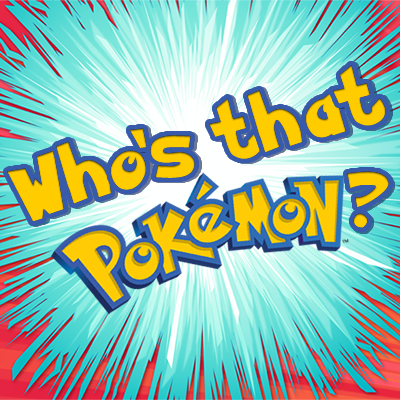

Who or what is the first pokemon? Seems like a simple question right, Wrong! There are multiple answers to this one simple question, Although the answer choice hasnt changed since Generation 4, which added the fourth choice, Which was also the first change since Generation 1. In the end the choice will be up to your preferance and how you think as a whole.